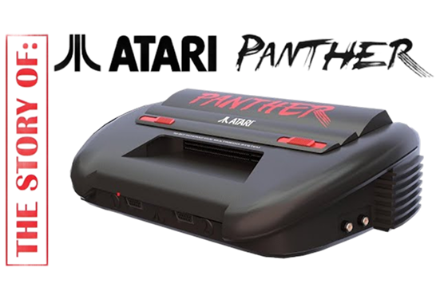
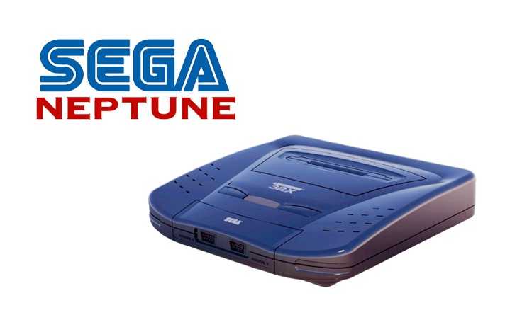

system: hybrid console (nintendo + sony collaboration)
announced: early 1990s (never publicly revealed officially at the time)
cancelled: 1991
manufactured: prototype units only
status
Originally conceived as a collaboration between Nintendo and Sony, the
console was supposed to combine cartridge and CD-ROM media. The partnership ended before launch,
leaving only a few working prototypes.
Design Document
Announced: 1991

Atari Panther
development log
system: 32-bit console
announced: 1991
cancelled: 1991
manufactured: never mass produced
status
Developed as a successor to the Atari Lynx, the Panther was intended to
compete in the nascent 32-bit market. The project was cancelled before launch in favor of the
more advanced Atari Jaguar.
Design Document
Announced: 1995

Sega Neptune
development log
system: hybrid (mega drive + 32x)
announced: 1995
cancelled: 1995
manufactured: prototype stage only
status
Designed as an integrated version of the Mega Drive with 32X hardware, the
Neptune was intended to streamline Sega's offerings. The project was canceled when the company
decided to focus on the Sega Saturn.